МНОГОГРАННИК – геометрическое тело, образованное замкнутой гранной поверхностью.
ГРАНЬ МНОГОГРАННИКА – часть его поверхности, представляющая собой плоскость в форме многоугольника (в составе поверхности их не менее четырех).
РЕБРО – линия пересечения смежных граней (сторон) многогранника.
ВЕРШИНА МНОГОГРАННИКА – вершина многогранного угла, образованная смежными гранями, представляющая собой (.) сходящихся концов ребер этих граней.
МНОГОГРАННЫЙ УГОЛ – пространственная фигура, составленная из плоских углов граней, общие ребра которых сходятся в одной (.). Различают по количеству граней в составе угла.
СЕТКА МНОГОГРАННИКА – совокупность его вершин и соединяющих их ребер.
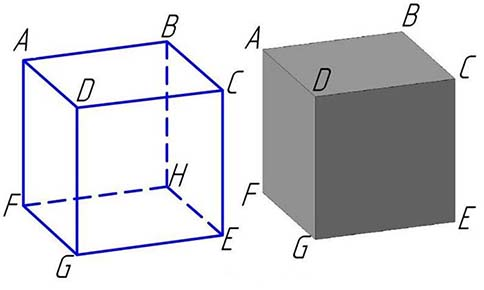
ВЫПУКЛЫЙ МНОГОГРАННИК – многогранник, расположенный с одной стороны от плоскости любой его грани. Все грани такого многогранника всегда выпуклые многоугольники.
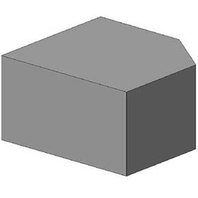
ВОГНУТЫЙ МНОГОГРАННИК – многогранник, который не может находиться по одну сторону от любой его грани.
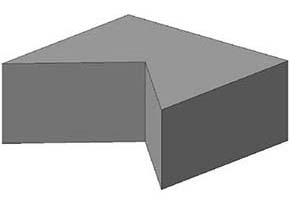
ТЕОРЕМА ЭЙЛЕРА.
Во всяком выпуклом многограннике число его вершин, плюс число его граней, минус число его ребер равно двум. Данную теорему о свойствах многогранников доказал великий математик Леонард Эйлер.
ФОРМУЛА ЭЙЛЕРА:
В + Г – Р = 2
где, В – количество вершин многогранника;
Г – количество граней многогранника; Р – количество ребер многогранника.
Формула справедлива для любого выпуклого многогранника и используется для проверки правильности построения изображений многогранников на ортогональном чертеже.
ПРАВИЛЬНЫЕ МНОГОГРАННИКИ - выпуклые многогранники, у которых все грани правильные и конгруэнтные многоугольники, а равные многогранные углы при вершинах выпуклые и содержат одинаковое число граней. Различают пять правильных многогранников: тетраэдр, гексаэдр, октаэдр, додекаэдр, икосаэдр. Все вершины правильного многогранника лежат на одной сфере, все его грани касаются одной сферы. Центры этих сфер совпадают в центре многогранника.
ТЕТРАЭДР – правильный четырехгранник, все четыре грани которого–равносторонние Δ т.е. это правильная трехгранная пирамида. Каждая из четырех граней может быть выбрана в качестве ее основания. Опущенный из любой вершины тетраэдра ⟂ на противоположную грань проходит через ее центр. Имеет 4 вершины, 4 грани и 6 ребер.
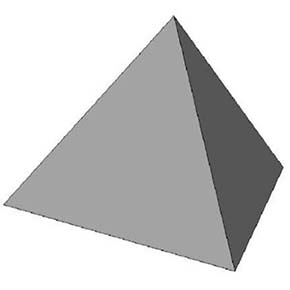
ГЕКСАЭДР – правильный шестигранник, поверхность которого состоит из шести равных □, т.е. это куб. В каждой вершине взаимно ⟂ сходятся три грани и три ребра. Имеет 8 вершин, 6 граней и 12 ребер. Куб представляет собой частный случай призмы.
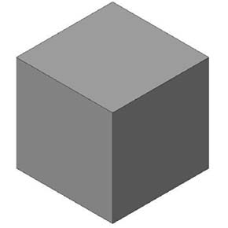
ОКТАЭДР – правильный восьмигранник, состоящий из восьми равносторонних и равных между собой Δ, соединенных по четыре у каждой вершины. Любая из диагональных плоскостей делит октаэдр на две пирамиды с квадратными основаниями, т.е. это четырехугольная правильная выпуклая бипирамида. Имеет 6 вершин, 8 граней и 12 ребер.
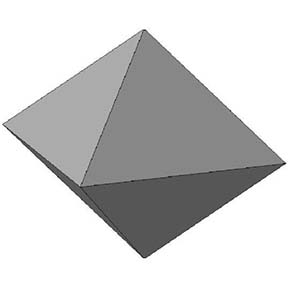
ДОДЕКАЭДР – правильный двенадцатигранник, состоящий из двенадцати правильных и равных пятиугольников, соединенных по три около каждой вершины. Два пятиугольника, находящихся в ∥ плоскостях, можно принять за основания додекаэдра. Имеет 20 вершин, 12 граней и 30 ребер.
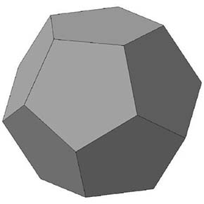
ИКОСАЭДР – правильный двадцатигранник, состоящий из двадцати равносторонних и равных Δ. Около каждой вершины соединены пять Δ. Икосаэдр можно расчленить на две правильные пятиугольные пирамиды и антипризму пятиугольными основаниями.Имеет 12 вершин, 20 граней и 30 ребер.
ПРИЗМА – выпуклый многогранник, у которого две противоположные грани–равные и взаимно ∥ многоугольника, а боковые грани–параллелограммы. Основания призмы всегда лежат параллельных плоскостях, а боковые ребра равны и ∥ друг другу. Если неограниченно увеличивать число сторон оснований, то в пределе призма станет цилиндром.
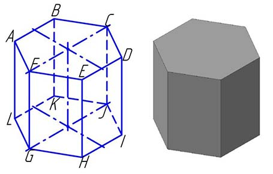
ПРОЕЦИРУЮЩАЯ БОКОВАЯ ПОВЕРХНОСТЬ ПРИЗМЫ – боковая поверхность призмы, которой ребра ⟂ какой - либо плоскости проекции.
ВЫСОТА ПРИЗМЫ – ⟂, проведенный между ∥ плоскостями, в которых лежат основания призмы.
ДИАГОНАЛЬ ПРИЗМЫ – отрезок, соединяющий две ее вершины, не принадлежащие одной грани.
ПРЯМАЯ ПРИЗМА – многогранник с равными ∥ гранями-основаниями в форме многоугольника и ⟂ им боковыми четырехугольными гранями и их ребрами.
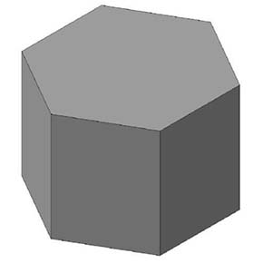
ПРАВИЛЬНАЯ ПРЯМАЯ ПРИЗМА – прямая призма, у которой основания–правильные многоугольники, а боковые грани–равные прямоугольники.
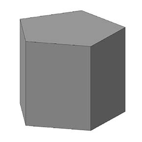
НАКЛОННАЯ ПРИЗМА – многогранник с двумя равными и ∥ многоугольниками-основаниями и не ⟂ им боковыми гранями и их ребрами.
УСЕЧЕННАЯ ПРИЗМА – призма, полученная рассечением плоскостью не ∥ ее основанию. Основания усеченной призмы не являются равными и ∥.
ПРИЗМА АРХИМЕДА – прямая правильная призма с квадратными боковыми гранями.
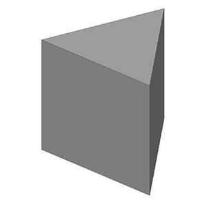
ПАРАЛЛЕЛЕПИПЕД – четырехугольная призма, у которой основания параллелограммы, а противоположные грани попарно ∥ и равны между собой. Имеет 6 граней, 8 вершин и 12 ребер.
ПРЯМОУГОЛЬНЫЙ ПАРАЛЛЕЛЕПИПЕД – прямой параллелепипед, у которого боковые ребра ⟂ основанию, а основания и боковые грани прямоугольной формы.
ПИРАМИДА – выпуклый многогранник, в основании которого лежит многоугольник, а боковые грани Δ формы с общей вершиной.
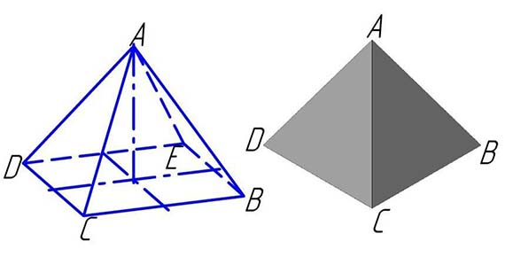
ВЫСОТА ПИРАМИДЫ – это ⟂, опущенный из общей для боковых ребер вершины пирамиды на ее основание.
ПРЯМАЯ ПИРАМИДА – пирамида, у которой высота опускается из вершин в центр ее основания.
НАКЛОННАЯ ПИРАМИДА – пирамида, у которой высота смещена от центра ее основания.
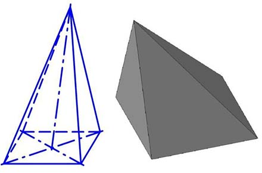
ПРАВИЛЬНАЯ ПИРАМИДА – пирамида, которой в основании правильный многоугольник, высота проходит через центр основания, боковые ребра равны, а все боковые грани–равные равнобедренные Δ.
ПОЛНАЯ ПИРАМИДА – пирамида, у которой есть вершина как общая (.) всех ребер боковой поверхности.
УСЕЧЕННАЯ ПИРАМИДА – многогранник, полученный из полной пирамиды после отсечения общей вершины боковых ребер. Плоскость отсечения может быть ∥ или не ∥ многоугольному основанию пирамиды
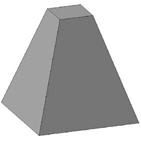
БИПИРАМИДА – многогранник, состоящий из двух пирамид, имеющих общее основание.
ПРАВИЛЬНАЯ БИПИРАМИДА – бипирамида, состоящая из равных пирамид.
НЕПРАВИЛЬНАЯ БИПИРАМИДА – бипирамида, состоящая из неравных пирамид.
АНТИПРИЗМА – призматоид, у которого верхнее и нижнее основание–равные многоугольники, развернутые относительно друг друга на 180o, а боковые грани треугольной формы.
ПРЯМАЯ АНТИПРИЗМА – антипризма, у которой центры оснований расположены на общем к ним ⟂.
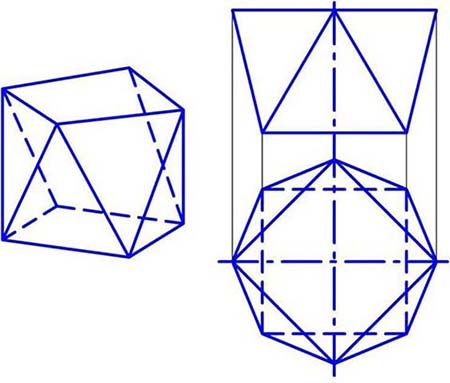
АНТИПРИЗМА АРХИМЕДА – прямая антипризма, у которой боковые грани–правильные Δ.
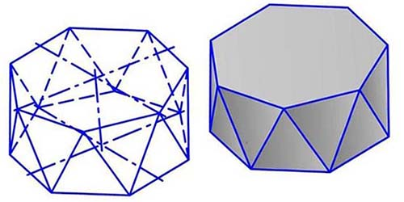
АКСОНОМЕТРИЧЕСКИЕ ПРОЕКЦИИ
АКСОНОМЕТРИЯ – метод параллельного проецирования на одну плоскость проекций, при котором используется ∥ прямоугольное и ∥ косоугольное проецирование. Аксонометрические изображения, полученные этим методом, широко применяются благодаря хорошей наглядности и простоте построений.
СУЩНОСТЬ МЕТОДА АКСОНОМЕТРИЧЕСКОГО ПРОЕЦИРОВАНИЯ – предмет относят к некоторой пространственной системе трех взаимно ⟂ координатных осей затем проецируют ∥ лучами на плоскость проекций вместе с осями координат. Аксонометрическая проекция - это проекция только на одну плоскость.
У вас есть проекционные чертежи и эскизы по определению аксонометрических и изометрических проекций детали? А как их сделать и сдать с первого раза на отлично вы не знаете? Отправляйте ваши задания сюда. Качеством исполнения вы останетесь довольны!
АКСОНОМЕТРИЧЕСКАЯ ПРОЕКЦИЯ – изображение предмета и соотнесенных ним пространственных осей координат X, Y, Z, полученное ∥ прямоугольным или косоугольным проецированием на аксонометрической плоскости проекций. Применяемые в конструкторской документации аксонометрические проекции стандартизованы в ГОСТ 2.317-69.
СООТНЕСЕНИЕ ПРОСТРАНСТВЕННОЙ СИСТЕМЫ КООРДИНАТ И ПРЕДМЕТА В АКСОНОМЕТРИИ – расположение трех взаимно ⟂ осей координат относительно объекта, изображаемого на аксонометрической проекции.
АКСОНОМЕТРИЧЕСКАЯ ПЛОСКОСТЬ ПРОЕКЦИЙ – плоскость, на которой в результате проецирования данного объекта вместе с его осями координат получают изображения аксонометрических проекций.
АКСОНОМЕТРИЧЕСКИЕ ОСИ КООРДИНАТ – изображение на аксонометрической плоскости проекций трех пространственных взаимно ⟂ осей координат X, Y, Z. При изображении трехмерного объекта оси координат можно расположить внутри него, совмещая его ось высоты с осью Z. Либо 3D предмет располагают в углу какого-либо октанта пространственной системы координат, совмещая (.) О с вершиной его основания
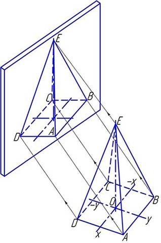
ВТОРИЧНАЯ ПРОЕКЦИЯ – проекция проекции, а именно аксонометрическая проекция ортогональных проекций и их координатных линий.
КОЭФФИЦИЕНТЫ ИСКАЖЕНИЯ – отношение длины аксонометрической проекции отрезка оси координат к его истинной длине.
ТЕОРЕМА ПОЛЬКЕ – любые три отрезка, выходящие из одной (.) на плоскости, могут быть приняты за ∥ проекции трех равных и взаимно ⟂ отрезков в пространстве.
КЛАССИФИКАЦИЯ АКСОНОМЕТРИЧЕСКИХ ПРОЕКЦИЙ:
- в зависимости от направления проецирующих лучей по отношению к аксонометрической плоскости различают две группы аксонометрических проекций: прямоугольные и косоугольные;
- в зависимости от отношений коэффициентов искажения по аксонометрическим осям различают три группы аксонометрических проекций: изометрические, диметрические и триметрические;
- в зависимости от соотношения размеров проецируемого предмета и его изображения различают точные и приведенные аксонометрические проекции.
ИЗОМЕТРИЧЕСКИЕ ПРОЕКЦИИ – аксонометрические проекции, у которых коэффициенты искажения по всем трем осям координат равны между собой.
ДИМЕТРИЧЕСКИЕ ПРОЕКЦИИ – аксонометрические проекции, у которых коэффициенты искажения равны между собой только по двум осям координат.
ТРИМЕТРИЧЕСКИЕ ПРОЕКЦИИ – аксонометрические проекции, у которых все три коэффициента искажения по осям координат различны.
СТАНДАРТНЫЕ АКСОНОМЕТРИЧЕСКИЕ ПРОЕКЦИИ – аксонометрические проекции, рекомендуемые ГОСТ-ом 2.317-69 к применению на чертежах всех отраслей промышленности и строительства. Стандартизованы пять аксонометрических проекций: две прямоугольные и три косоугольные.
КОЭФФИЦИЕНТ ПРИВЕДЕНИЯ – подобный множитель коэффициента искажения. Используется для сокращения вычислительной работы, когда коэффициент искажения округляют до удобного для вычислений значения.
ПРЯМОУГОЛЬНАЯ ИЗОМЕТРИЧЕСКАЯ ПРОЕКЦИЯ – стандартная аксонометрическая проекция, полученная с использованием прямоугольного проецирования и имеющая равные между собой коэффициенты искажения по осям координат. Построение прямоугольной изометрической проекции начинается с нанесения на чертеж проекций осей координат, к которым отнесен изображаемый объект. Изображение осей координат можно выполнить либо при помощи циркуля, либо равных по величине делений.
ПРЯМОУГОЛЬНАЯ ДИМЕТРИЧЕСКАЯ ПРОЕКЦИЯ – стандартная аксонометрическая проекция, полученная с использованием прямоугольного проецирования и имеющая равные между собой коэффициенты искажения по двум осям координат. Стандарт рекомендует прямоугольную диметрическую проекцию строить без сокращения размера по осям координат и применить коэффициент приведения равный 0,5 по оси Y, что соответствует увеличению изображения относительно оригинала в 1,06 раза. Построение прямоугольной диметрической проекции начинается с нанесения на чертеж проекций осей координат, к которым отнесен изображаемый объект. Изображение осей координат заданного положения можно выполнить, используя равные по величине деления
КОСОУГОЛЬНАЯ ФРОНТАЛЬНАЯ ДИМЕТРИЧЕСКАЯ ПРОЕКЦИЯ – стандартная аксонометрическая проекция, полученная с использованием косоугольного проецирования на аксонометрическую плоскость картины, расположенную ∥ координатной плоскости. Фронтальную диметрическую проекцию следует применять в тех случаях, когда целесообразно сохранить не искаженными какие-либо ребра и грани, расположив их параллельно фронтальной плоскости проекций. Изображение не имеет отличий от оригинала.
КОСОУГОЛЬНАЯ ФРОНТАЛЬНАЯ ИЗОМЕТРИЧЕСКАЯ ПРОЕКЦИЯ – стандартная аксонометрическая проекция, полученная с использованием косоугольного проецирования под углом 45o на аксонометрическую плоскость проекций, расположенную параллельно координатной плоскости.
КОСОУГОЛЬНАЯ ГОРИЗОНТАЛЬНАЯ ИЗОМЕТРИЧЕСКАЯ ПРОЕКЦИЯ – стандартная аксонометрическая проекция, полученная с использованием косоугольного проецирования под углом 45o на аксонометрическую плоскость проекций, расположенную ∥ координатной плоскости. Коэффициент искажения по оси вычисляется равным ctg угла наклона проекционного луча к плоскости проецирования, а ctg 45o=1.